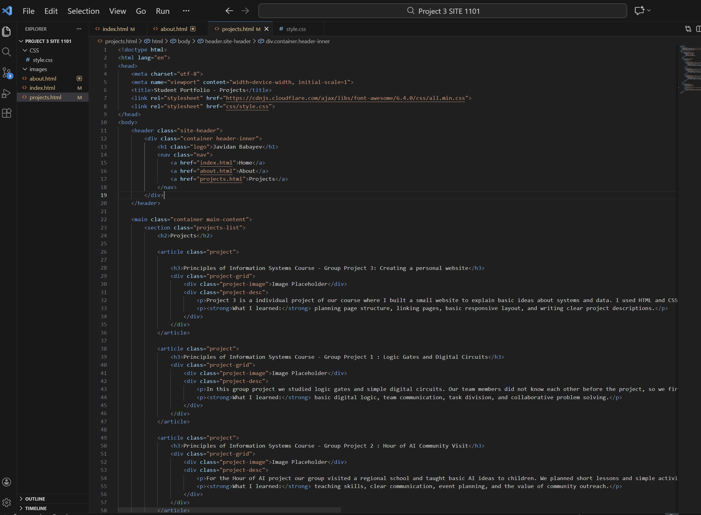
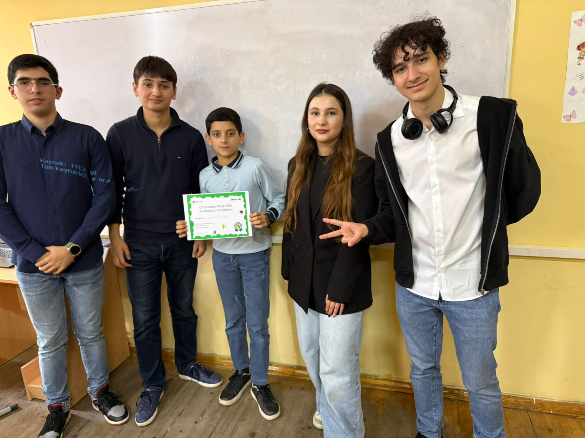

Projects
Below are selected projects I completed for SITE 1101. Each project helped me learn technical skills and how to work with others.
Principles of Information Systems Course - Personal Portfolio Website

This personal portfolio website shows my work for SITE 1101 course . I created a home, about, and projects page using HTML and CSS. I focused on a clear layout, navigation, and responsive design so the site works on phones and tablets.
Tools: HTML, CSS. What I learned: Despite I had experience in Fronted part of coding,I didn't work on these parts a while, and I think, this project helped me to remind everything and reinforce my knowledge of file structure, linking pages, responsive layout, and writing clear descriptions.
HTML
CSS
Responsive
Principles of Information Systems Course - Logic Gates & Digital Circuits

In this group project we studied logic gates and simple digital circuits. Our team members did not know each other before the project, so we learned how to communicate and divide tasks. We used diagrams and small simulations to show how gates work together to make decisions.
What I learned: basic digital logic, team communication, and collaborative problem solving.
Digital Logic
Teamwork
Principles of Information Systems Course - Hour of AI Community Visit

For the Hour of AI project our group visited a regional school and taught basic AI ideas to children. We planned short lessons and simple activities. I helped prepare materials and explained concepts in an easy way to the students.
What I learned: teaching skills, clear communication, event planning, and community outreach.
Teaching
Outreach
Future Projects
More projects will be added here as I complete new assignments and personal work. Check back to see updates and new examples of my work.